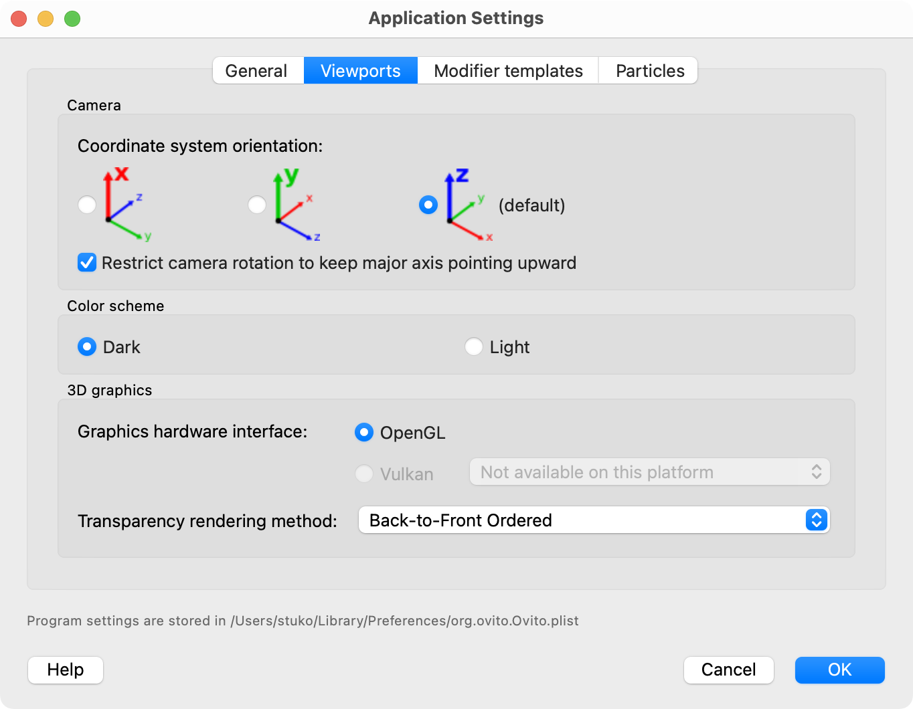

Viewport settings
{kind=link}
This page of the application settings dialog contains options related to the interactive viewports of the OVITO.
Camera
- Coordinate system orientation
OVITO can restrict the viewport camera rotation such that the selected Cartesian coordinate axis always points upward. Default: z-axis.
- Restrict camera rotation to keep the major axis pointing upward
This option constrains the camera’s orientation to prevent the camera from turning upside down.
Viewport background
This option changes between a dark (default) and a white viewport background.
3D graphics
- Transparency rendering method
This option affects the rendering of semi-transparent objects when they occlude other objects or overlap with each other. Both available rendering methods represent different approximations of how a true rendition of semi-transparent objects would look like - which is not achievable in real-time visualization using OpenGL.
Back-to-front ordered rendering (default) gives correct results if there is only one kind of semi-transparent object in the scene, e.g. just particles, but likely fails to render a mixture of different semi-transparent objects correctly, e.g. semi-transparent particles combined with semi-transparent surface meshes.
Weighted Blended Order-Independent Transparency is an alternative method more suitable for overlapping semi-transparent objects of different kinds. But it delivers only a rough approximation of translucency.